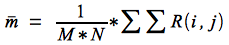

Diane Delallée – M1 informatique
Rapport TD2 : Statistiques des images.
1. Pixels image et pixels de background
Afin de compter le nombre de pixels ayant la valeur 0 dans une image, on va ajouter un morceau de code dans le programme skelet.c qui permet de parcourir l'image pixel par pixel et compter le nombre de pixel dont la valeur est à 0.
Afin de calculer la proportion, on va également dans ce morceau de code compter le nombre total de pixels.
counter = 0;
int maxPixels = 0;
for (ichannel=0; ichannel<channel_number; ichannel++){
for (ili=0; ili<nliin; ili++){
for (ipx=0; ipx<npxin; ipx++){
processed_image[ichannel][ili*npxin+ipx] = origin_image[ichannel][ili*npxin+ipx];
if(processed_image[ichannel][ili*npxin+ipx] == 0){
counter += 1;
}
maxPixels += 1;
printf("Nb de pixels à 0 %d",counter);
printf("Nb max de pixels %d",maxPixels);
On trouve alors que pour girl.r il n'y a aucun pixel ayant pour valeur 0. La proportion est donc de 0%.
Concernant sans-remo.1, on trouve qu'il y a 15913 pixels ayant pour valeur 0. Cela nous fait donc une proportion de 6,07%.
2. Histogramme
a. Calculer et afficher l’histogramme de chaque canal de l’image
Afin de calculer l'histogramme de l'image, on va créer un tableau de taille 256 correspondant aux valeurs possibles des pixels. On va ensuite parcourir tous les pixels de l'image et on incrémentera de 1 la valeur du tableau correspondant à la valeur du pixel.
Une fois cela fait, on affichera un nombre d'étoile proportionnel au nombre de pixel de valeur i.
int values[256];
int ival2 = 0;
for(ival2 = 0;ival2<256;ival2++){
values[ival2]=0;
}
for (ichannel=0; ichannel<channel_number; ichannel++){
for (ili=0; ili<nliin; ili++){
for (ipx=0; ipx<npxin; ipx++){
processed_image[ichannel][ili*npxin+ipx] = origin_image[ichannel][ili*npxin+ipx];
values[processed_image[ichannel][ili*npxin+ipx]] ++;
}
}
}
int ival = 0;
for(ival = 0;ival<256;ival++){
printf("pixel's value %d", ival);
int stars = 0;
for (stars = 0; stars<values[ival]; stars++{
printf("*");
}
printf("\n");
}
b. Afficher « l’image histogramme »
c. Capturer « l’image histogramme »
3. Moyenne et écart-type
a. Formulation mathématique

ici on a R(i,j) = 0.255
b. Programmation et calcul de la moyenne et de l’écart-type
il faut enlever tous les pixels noirs 0
On compte le nombre total de pixel sans ceux de background.
On calcule H(r) = r(i,j)
et hop on fini les calculs.